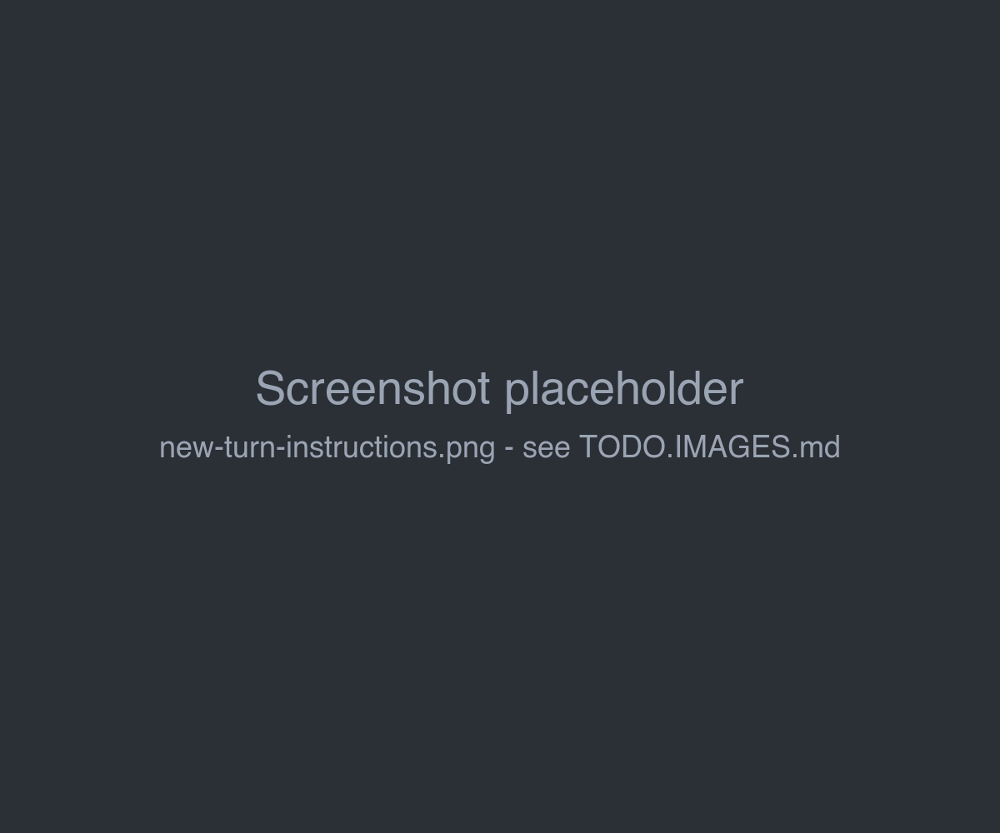
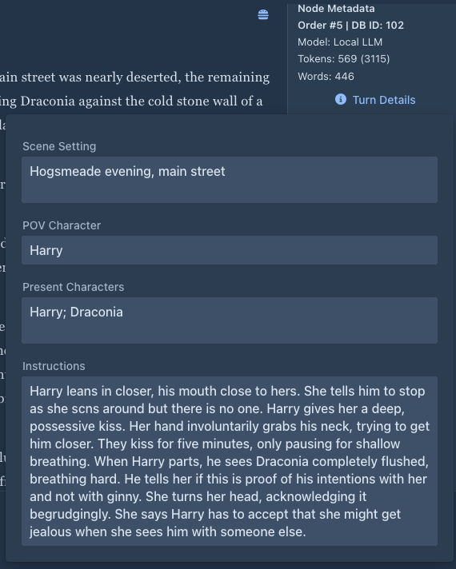
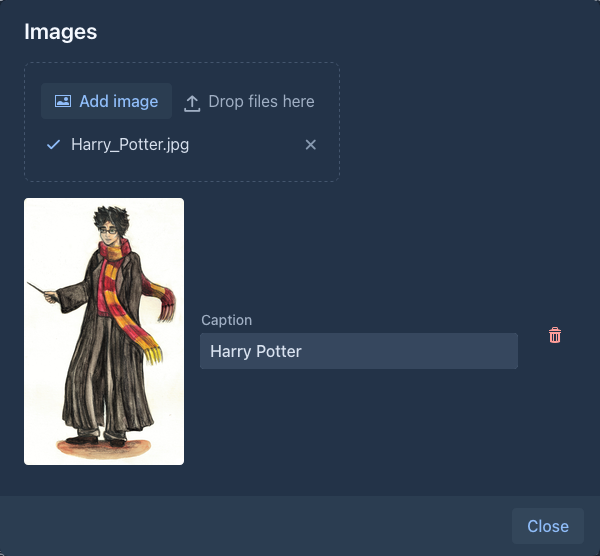
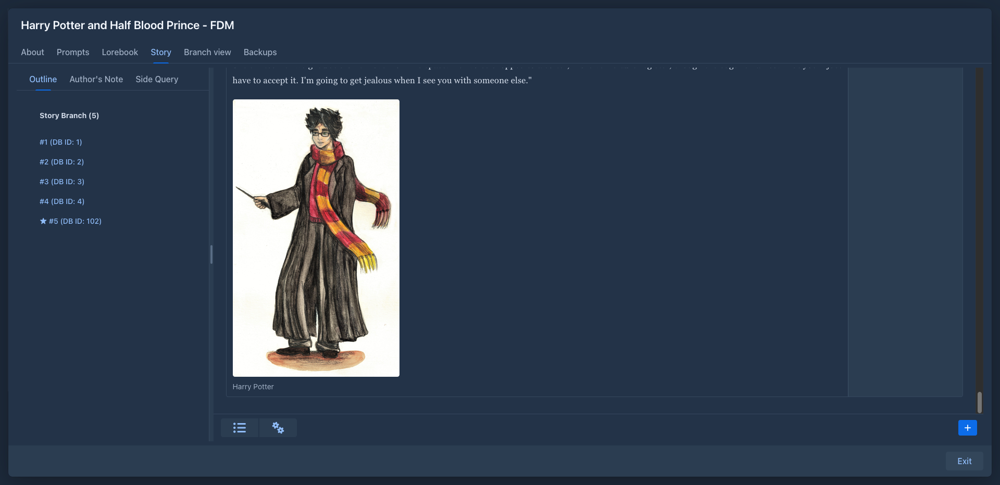

Story editor
The Story tab of a book is where you write. It shows the parts of the active branch from the beginning to the end.

The divider between the outline and the parts can be dragged. Marginalia remembers the scroll position of each branch and returns to it when you open the book again.
Writing the next part
- Click + in the bottom right corner. The New Turn Instructions panel opens.
-
Fill in the fields. All of them are optional, but the model needs at least some direction:
Scene Setting, POV Character and Present Characters are filled in from the last part, so you only change what is different. Instructions starts empty each time.
- Click Generate.

The new part appears at the end and fills in as the model writes it. For reasoning models the reasoning appears first under View Reasoning.
While a part is being generated, the + button turns into a red Stop button. Stopping keeps the text written so far as the part. The rest of the book window is disabled until the generation finishes or is stopped.
When the model returns an error (server not reachable, wrong API key, context too long...), the error is shown. If no text arrived yet, the story stays as it was: a new part or swipe is removed and a regenerated part gets its previous text back. Text that already arrived before the error is kept, like with Stop. Fix the problem and generate again.
How the fields get into the prompt is set by the book's User Prompt. With the default user prompt, the model gets them as Current Location & Time, Point of View Character, Characters Currently Present / State and Plot Specifications for the Next Part.
The text is written in Markdown: *italics*, **bold**, # Heading and so on are shown formatted. A part with a
# heading is a chapter for the Chapter Marker extension.
The part menu
Every part has a menu (☰) in its top right corner:
Regenerate and Swipe use the turn details of the last part (see
Part metadata
Next to each part:
Turn details
Turn Details opens the Scene Setting, POV Character, Present Characters and Instructions the part was written from. For the last part they can be changed (changes are saved right away) and are used by Regenerate and Swipe. For earlier parts they are read-only.

Editing the text
Generated text is yours to change. Choose Edit in the part menu, change the text, and choose Save. Edited parts are sent to the model as you edited them.
Editing a part that a summary covers makes that summary outdated; Marginalia notices it at the next generation and drops the summary.
Deleting a part
Delete removes the part from the story. The parts that followed it stay and continue from the part before it, so deleting a part in the middle of the story just takes it out. Deleting the last part makes the part before it the new end of the branch.
Images
A part can have pictures: a map, a character portrait, an illustration. Choose Images in the part menu to open the list of the pictures of the part.

-
Add image (or drop a file on it) uploads a PNG, JPEG, GIF or WebP picture of up to 10 MB. WebP pictures are converted to PNG when they are uploaded, because Word and PDF files can't contain WebP.
-
Caption is shown under the picture. It can be empty.
-
The trash button removes the picture from the part.
The pictures are shown under the text of the part and in the same order in every export.

Pictures are not part of the text. The model never sees them, they are not in the prompt, they do not count as
tokens and they do not change the summaries. They are also not Markdown: a  link written in
the text is not a picture of the part, use Images instead.
Good to know:
-
Regenerate keeps the pictures of the part, also when the generation fails. Swipe writes a new part (a new version next to the old one), which starts without pictures. Branch Story copies the pictures to the new part.
-
Pictures belong to your account. In the viewer only you see them; readers of a published book see the text only. A book is published as it is: pictures are not made public with it.
-
A backup remembers which pictures a part has, but not the picture files. Restoring a backup into another account or another installation gives parts without their pictures.
-
Removing a picture from a part only takes it off the part. The file stays and is still listed in Resources, where you can download, replace or delete it. Deleting it there removes it from every part that uses it. The file itself stays in the data folder.
Summaries
The Summaries button in the bottom bar (left of the settings menu ⚙) opens the overview of the summaries of the branch, where they can be edited, deleted and merged into meta summaries. The tooltip of the button shows how many tokens the summaries in use take in the prompt. See Summaries.
Book styles
The settings menu (⚙) in the bottom bar has Change Styles For Text. It switches the text of the parts between the normal look of the application and a book-like reading style (the one the viewer uses). The setting is saved per book.
In this style paragraphs are justified and long words are hyphenated automatically, using the dictionary of the book's Language (set on the About tab). Hyphenation is done by the browser; for a few rare languages it has no dictionary and the text is simply not hyphenated.
Exporting the story
The settings menu (⚙) also has Export story, which saves the active branch as a text, Markdown, HTML, Word, PDF or EPUB file. See Exporting a book.
What the model gets
For each new part Marginalia sends:
-
The master template as the system message: role, lorebook entries, point of view, tense, style and summaries. The jailbreak prompt of the inference provider, if enabled, comes first.
-
The previous parts of the active branch as the model's own earlier answers - as many as fit into the context limit, newest first. Older parts that don't fit are left out (unless a summary covers them).
-
The user prompt with the instructions for the new part.
Show Prompt on any part shows exactly what was sent. See Book prompts for the templates.